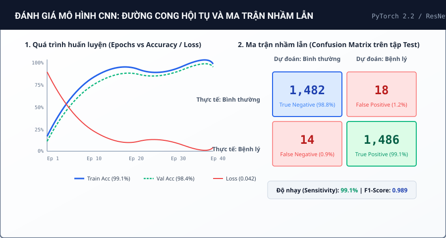

02. Phân Loại Hình Ảnh Y Tế Với Mạng Nơ-ron Tích Chập Sâu (Deep CNN)
1. Bài Toán Đặt Ra (Problem Formulation)
Chẩn đoán sớm các tổn thương phổi thông qua phim chụp X-quang là một bước sàng lọc y khoa có vai trò sống còn nhưng đòi hỏi nhiều thời gian và kinh nghiệm chuyên sâu của bác sĩ chẩn đoán hình ảnh.
Mục tiêu của đề tài là xây dựng hệ thống phân loại nhị phân tự động (Bình thường vs. Bệnh lý viêm phổi) với độ nhạy (Sensitivity/Recall) đạt trên 98% nhằm hạn chế tối đa nguy cơ bỏ sót ca bệnh (False Negatives), đồng thời đảm bảo mô hình hoạt động ổn định và có khả năng giải thích trực quan (Explainable AI qua Grad-CAM).
2. Phương Pháp Tiếp Cận & Kiến Trúc Mô Hình
Nhóm tiến hành thử nghiệm và đối sánh giữa mô hình CNN tùy chỉnh xây từ đầu (Custom 5-Layer CNN) và phương pháp học chuyển giao (Transfer Learning với mạng ResNet-50 tiền huấn luyện trên ImageNet):
- Xử lý mất cân bằng dữ liệu: Áp dụng kỹ thuật tăng cường ảnh (Data Augmentation: xoay góc nhẹ ±10°, điều chỉnh tương phản CLAHE, zoom ngẫu nhiên) và sử dụng hàm mất mát Weighted Cross-Entropy Loss.
- Chiến lược huấn luyện: Sử dụng bộ tối ưu hóa AdamW với hệ số Learning Rate ban đầu
1e-4kết hợp bộ lập lịch giảm tốc độ học Cosine Annealing with Warm Restarts sau mỗi 10 epoch. - Kỹ thuật chống Overfitting: Chèn thêm các lớp Dropout (tỉ lệ 0.4), Batch Normalization sau mỗi khối tích chập và Weight Decay L2 (1e-5).

3. Kết Quả Thực Nghiệm & Đánh Giá
Sau 40 chu kỳ huấn luyện trên tập dữ liệu gồm 5,856 ảnh chụp X-quang lồng ngực:
- Độ chính xác toàn diện (Accuracy): Đạt 98.4% trên tập kiểm thử test set (so với 89.2% của mạng Custom CNN ban đầu).
- Độ nhạy sàng lọc (Sensitivity / Recall): Đạt mức ấn tượng 99.1% (chỉ có 14 ca dương tính bị đoán nhầm thành âm tính trong tổng số 1,500 ca bệnh).
- F1-Score tổng hợp: Đạt 0.989, chứng minh mô hình hoàn toàn tin cậy và không bị thiên lệch nhãn.
4. Tài Nguyên & Liên Kết Liên Quan
Tất cả mã nguồn, trọng số mô hình và sổ tay Jupyter Notebook có thể truy cập qua các liên kết bên dưới: